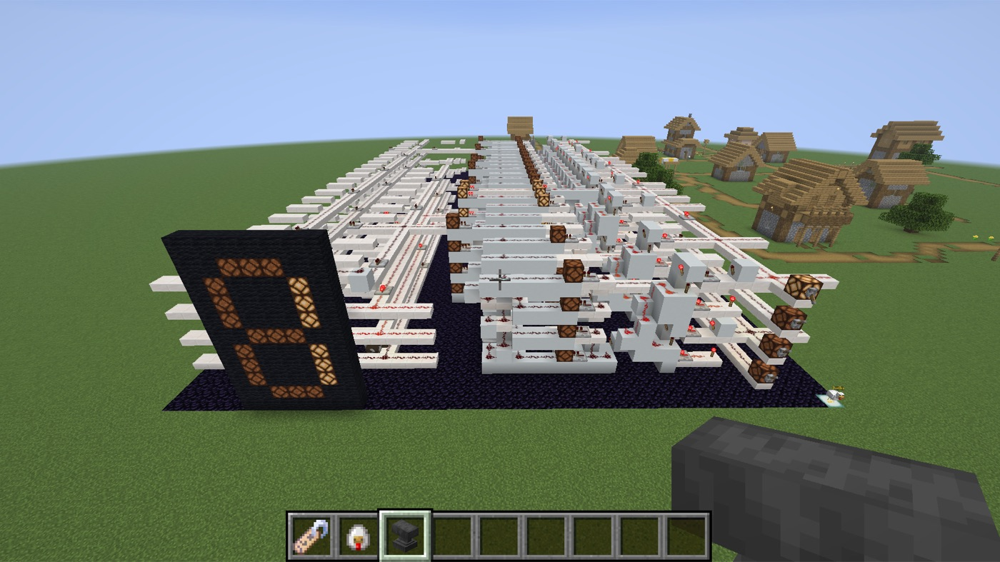

よりみち ／ 半導体を学ぼう
トーチ1本から、
半導体チップへ。
マインクラフトのレッドストーントーチは、トランジスタと同じ働きをする部品です。
電気の道からはじめて NOT・AND・XOR、そして2ビットの足し算機まで。
16の問題を、子ども自身の手で組み上げます。
WHY 8x9 TOKYO
ほかの教室がやらないことを、やる。
スマホもゲーム機もAIも、中身をたどれば何十億個ものトランジスタが「ON / OFF」を切り替えているだけ。
けれど、その一番奥のしくみを子どもが自分の手で確かめられる場所は、ほとんどありません。
8x9東京は、マイクラを「楽しく遊ぶための入口」で終わらせません。
大好きなゲームの中で、コンピュータが動く理由そのものにたどり着く。
「使う側」から「しくみを知って、作れる側」へ。そのために、教材もツールも自分たちで作っています。
本物の原理
ゲームの「ごっこ」ではなく、論理回路の教科書と同じ原理。トーチ1つで NOT、3つで AND。半導体チップと同じ組み立て方です。
自分で組む
お手本を写すのではなく、問題文と合格条件だけを見て自分で設計。最後の2問はお手本すら用意していません。
独自開発の環境
回路の正しさを自動で検査するプラグインを自社開発。現役エンジニアが作った「本気の実験室」で学びます。
TORCH = TRANSISTOR
レバーを動かして、確かめてみよう。
レッドストーントーチは「くっついたブロックに電気が来ると消える」部品。
これが NOT（ぎゃく）。組み合わせると、どんな計算もできる回路になります。
はんぶん たしざん（半加算器）
0 + 0 = 00 （2進数）
S（こたえ）は XOR、C（くりあがり）は AND。
1 + 1 = 10 —— 回路で足し算ができた瞬間です。
CURRICULUM
16問で、足し算機まで。
難しい問題の前には、その部品になる技能が必ず1問ずつ先に出てきます。
XORで手が止まる子が多かったから「線を分ける・交差させる・トーチの置き方」を独立した問題にしました。
電気とトランジスタ
問題 1〜6 ／ 約40分- 01でんきを とおせ基礎・5分
レッドストーンは電気の道
- 02とおくへ とどけ基礎・7分
信号には強さがある。リピーターで元気に
- 03ぎゃくに しろ — NOTゲート・8分
トーチ = トランジスタ
- 04うえの トーチゲート・8分
置き方で、電気の出る高さが変わる
- 05どちらかで つく — OR配線・5分
線を合流させる。はじめての真理値表
- 06ふたつに わけろ配線・5分
1本の線を2本に分岐
配線とゲート
問題 7〜9 ／ 約30分- 07いれかえろ — 線の交差配線・12分
混ざらずに越える「橋」をかける
- 08りょうほうで つく — ANDゲート・12分
トーチ3つで1つのゲート。CPUの中も同じ
- 09AND の ぎゃく — NANDゲート・6分
回路の出口を次の入口へ。これでどんな回路も作れる
XORと半加算器
問題 10〜11 ／ 約30分- 10どちらか だけ — XOR合成・20分
分岐・交差・AND・NANDを全部使う前半の山場
- 11はんぶん たしざん — 半加算器計算・10分
1 + 1 = 10。回路で足し算ができる最初の瞬間
メモリ・時計・選択
問題 12〜14 ／ 約40分- 12おぼえる — RSラッチ記憶・12分
レバーを戻しても覚えている。メモリ1ビット
- 13とけい — クロック時間・10分
ひとりでピカピカ。コンピュータの心臓の鼓動
- 14えらぶ選択・15分
信号を選んで通す、選択回路
チップをつくる
問題 15〜16 ／ 約60分- 15くりあがり — 全加算器計算・25分お手本なし
くりあがりを受け取って、何桁でも足せる部品へ
- 16チップ — 2ビット加算器チップ・30分お手本なし
ここまでの全部を組み合わせた、自分だけの半導体チップ
HOW IT WORKS
答えの「形」は見ない。
回路が正しく動くかだけを見る。
合否は真理値表で決まる
検査ボタンを押すと、プラグインがレバーを自動で動かし、入力の全パターンでランプを読み取ります。全部合えば合格。お手本と違う組み方でも正解になり、「ランプの横にトーチを立てて点けっぱなし」のようなごまかしは、入力が変わった瞬間に見抜かれます。
| A | B | Q |
|---|---|---|
| 0 | 0 | 0 |
| 0 | 1 | 1 |
| 1 | 0 | 1 |
| 1 | 1 | 0 |
1人1ワールド
参加すると、自動で自分専用の空中の広場へ。ほかの子に壊される心配も、真似で済ませることもできません。進み具合は一人ずつ保存され、次回は続きから。
つまずきを想定したヒント
30秒たつとヒントが自動で表示。講師は「どこが OR でどこが AND？」のように、答えではなく考え方を問いかけます。最後まで自分の力でたどり着くための設計です。
ルールはたった6つ
「ダストは電気の道。15マスで消える」「トーチは付けたブロックに電気が来ると消える」——16問で使う規則はこれだけ。少ないルールの組み合わせで、複雑な回路が生まれることを体感します。
BEYOND THE LAB
マイクラの回路は、本物の半導体につながっている。
レッドストーンラボはゴールではなく入口です。
8x9東京が見据えているのは、マイクラで覚えた論理回路が、実際の半導体設計の流れへそのままつながっていく道筋です。

// 1文字 = 1ブロック。W=ダスト C=コンクリート G=リピーター
const cellKey = { A: AIR, C: CONCRETE, W: RS_WIRE, G: RS_REPEATER_E, ... }
const or4_0 = [
[ "CCCCCAAA", // 1段目
"AACCCAAA" ],
[ "WWWCWAAA", // 2段目
"AAWWWAAA" ],
...
]- 1マイクラで論理回路
レッドストーンラボの16問。トーチ = トランジスタで NOT から加算器まで。
- 2マイクラで計算機
回路をプログラムで自動レイアウト。手では置ききれない規模へ。
- 3ハードウェア記述言語
Verilog などで回路を「コード」として書き、論理合成する。
- 4シミュレーション
波形を見ながら、書いた回路が正しく動くか検証する。
- 5レイアウト
オープンソースの設計ツールと PDK で、チップの配置・配線まで。
- 6シャトルで製造
複数の設計を1枚のウェハに相乗りさせる仕組みで、本物のチップに。
- 7基板に載せて動かす
PCBに載せ、自分の設計したチップで数字を光らせる。
- 8発表する
作ったものを、自分の言葉で世の中に発信する。
※ 2〜8は、レッドストーンラボの先に8x9東京が描いている学びの道筋です。取り組む内容はお子さまの興味と習熟度に合わせて講師と相談しながら進めます。
FOR PARENTS
保護者の方へ
半導体なんて、子どもには難しくないですか？
問題文はひらがな中心で、「レバーを いれたら ランプを けせ」のように短く書かれています。専門用語はあとから「これが NOT という名前」と教えるので、仕組みを先に体で覚え、言葉はあとからついてきます。
何が身につきますか？
コンピュータが動く原理（論理回路・2進数・メモリ・クロック）の理解に加え、「なぜ動かないのか」を自分で切り分けるデバッグの力。検査で落ちた理由を、正解と実際の値から考える習慣が育ちます。
どのコースで受けられますか？
マイクラAIコースの第2章「マイクラのAIワールドで学ぶ」（5〜8か月）の中で、「よりみち」として取り組みます（PC・教材込み、追加料金なし）。AIやコーディングの本線からいったん寄り道して、コンピュータの中身をのぞきに行く時間です。まずは無料体験レッスンで、教室の雰囲気をご覧ください。